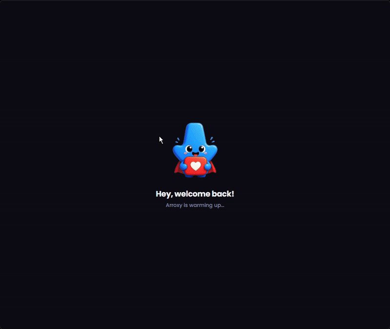
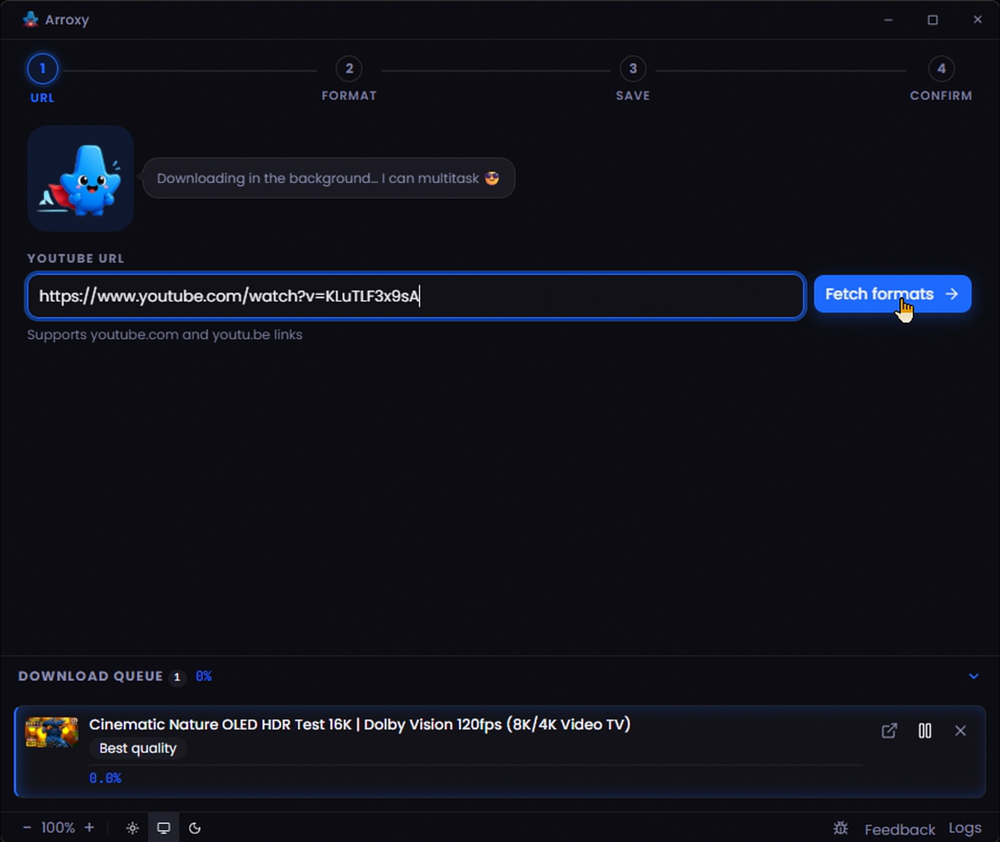
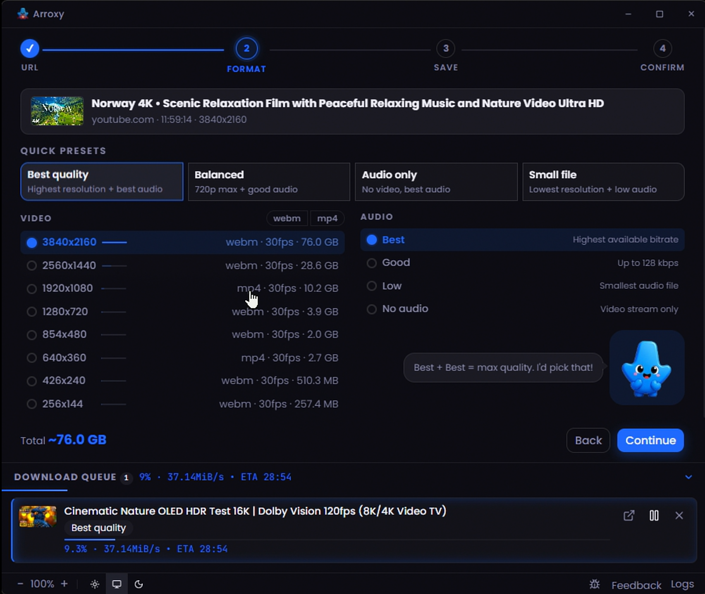
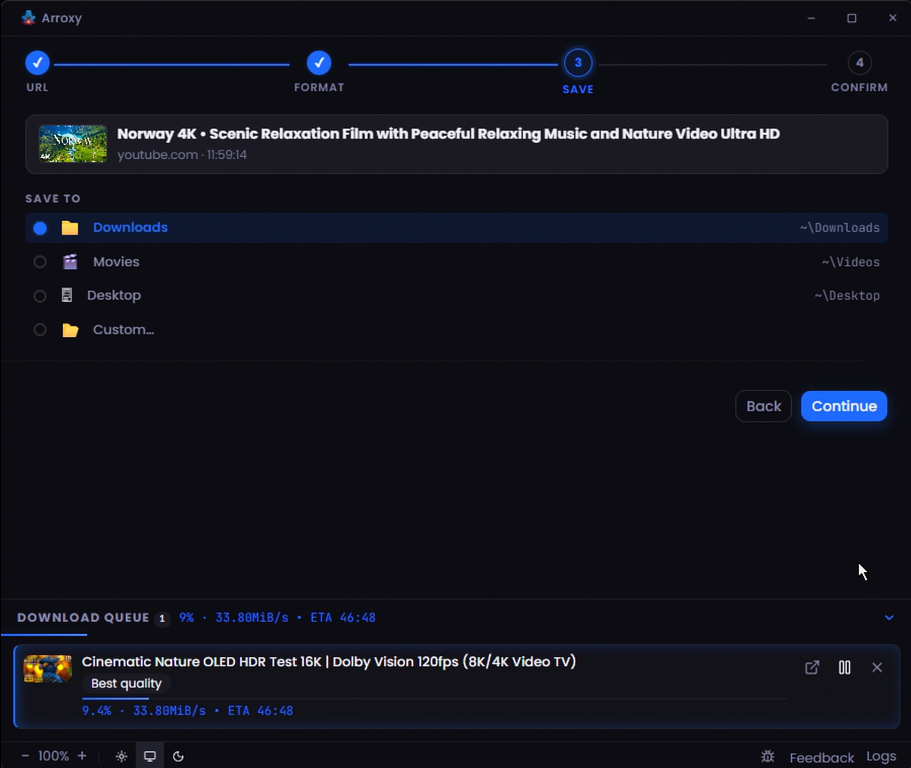
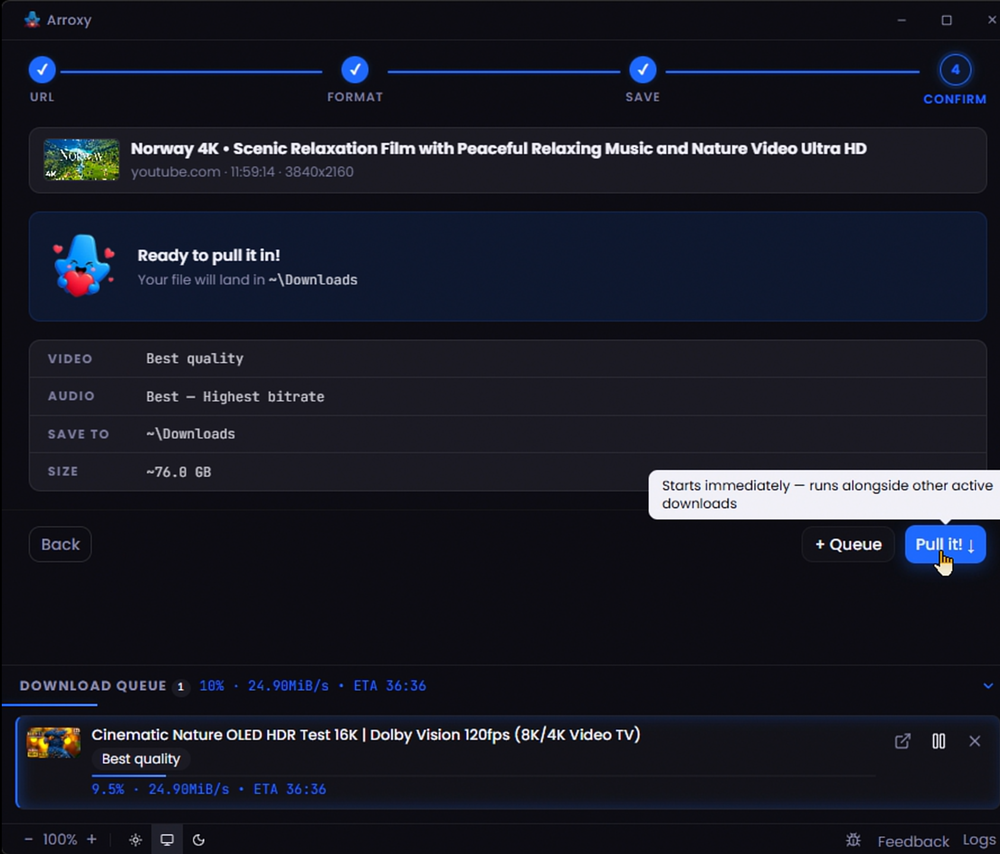
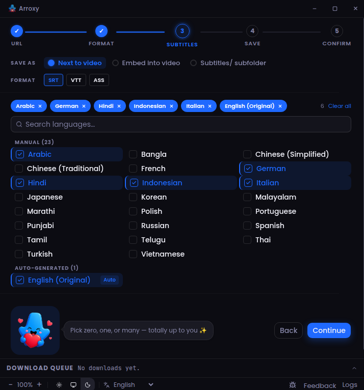

YouTube 提供的一切 — 4K、1080p60、HDR、Shorts — 直接保存到你的磁盘。
最新版本: 加载中… · Windows · macOS · Linux

粘贴 URL，选择画质，点击下载。就这么简单。
2160p、1440p、1080p、720p — YouTube 提供的每一种分辨率，外加 MP3、AAC、Opus 纯音频。
高帧率与 HDR 流原样直通，正如 YouTube 编码的那样 — 零画质损失。
想排多少视频就排多少。下载面板并行显示每个任务的进度。
Arroxy 在后台保持 yt-dlp 与 ffmpeg 最新 — 应对 YouTube 的每一次变化。
English, Español, Deutsch, Français, 日本語, 中文, Русский, Українська, हिन्दी — 自动检测你的语言。
Windows、macOS、Linux 原生构建 — 安装包、便携版、DMG 或 AppImage。
以 SRT、VTT 或 ASS 获取手动或自动生成的字幕 — 保存到视频旁边、嵌入便携的 .mkv，或整理到 Subtitles/ 子文件夹。
跳过或标记赞助商、片头、片尾、自我推广等片段 — 用 FFmpeg 剪除或直接添加章节。按类别自由选择。
在任何地方复制 YouTube 链接，切换回应用时 Arroxy 立即检测 — 确认提示让你保持控制。在高级设置中开启或关闭。
粘贴的 YouTube 链接会自动剥除跟踪参数（si、pp、feature、utm_*、fbclid、gclid 等），并解包 youtube.com/redirect 跳转链接 — URL 字段始终显示规范链接。
关闭窗口后 Arroxy 将缩入系统托盘，下载在后台持续运行 — 单击托盘图标可恢复窗口，或通过托盘菜单退出应用。





大多数 YouTube 下载器迟早会向你索取 Cookie。Arroxy 永远不会。
无需 Google 账号。没有会话过期问题。账号被标记的风险为零。
Arroxy 请求的只是浏览器同样会请求的令牌。不导出，不保存。
零分析。你的下载、历史和文件全部留在本地设备 — 就这样。
整个流程通过 yt-dlp + ffmpeg 在本地运行。文件永远不会经过远程服务器。
直接下载或任意主流包管理器 — 每次发布都会自动更新。
推荐用于 Windows 10/11。随系统自动更新。
通过 Scoop bucket 便携安装。无需管理员权限。
添加 cask，一行命令安装。通用二进制 (Intel + Apple Silicon)。
沙箱安装。从 Releases 下载 .flatpak 包，一行命令安装。无需配置 Flathub。